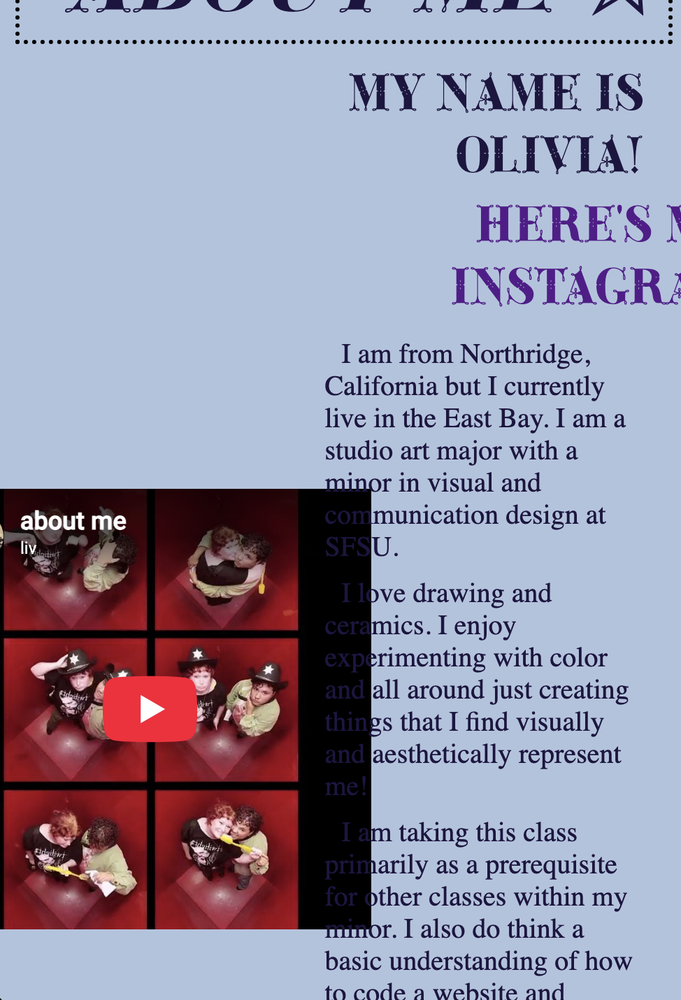
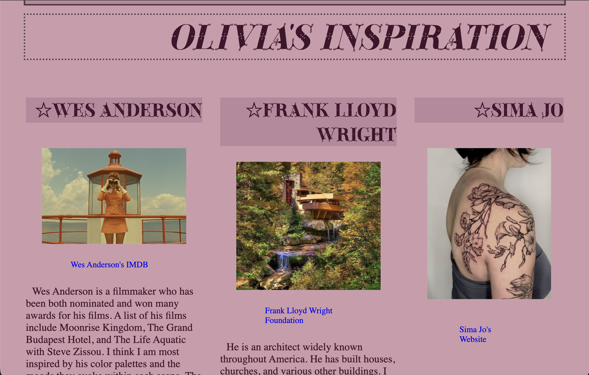
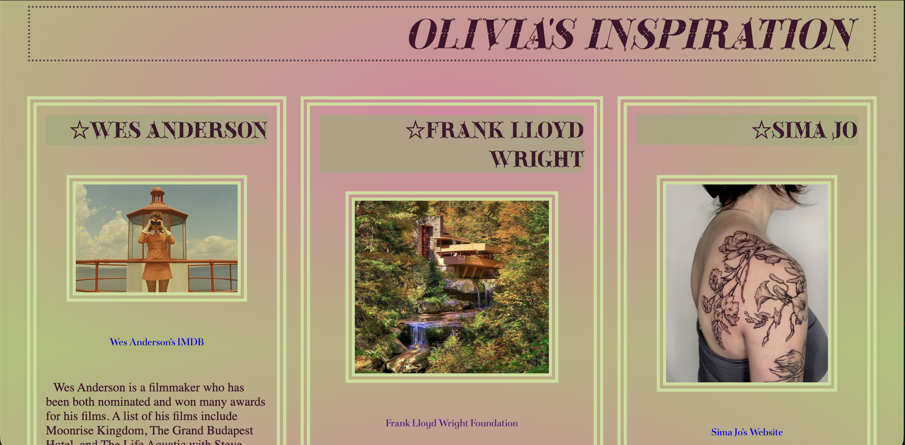
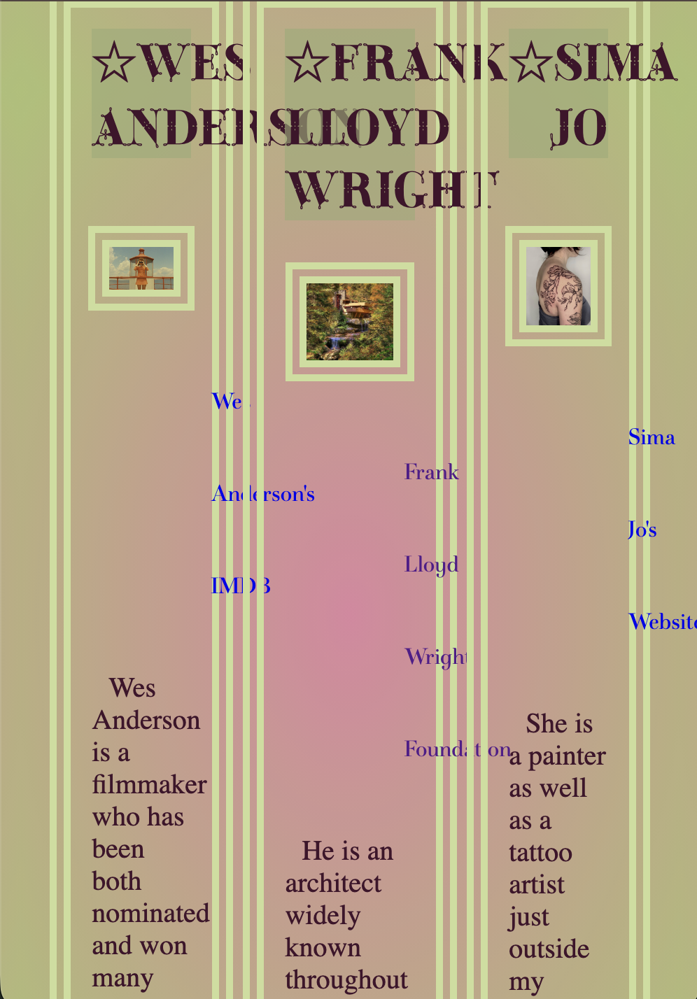
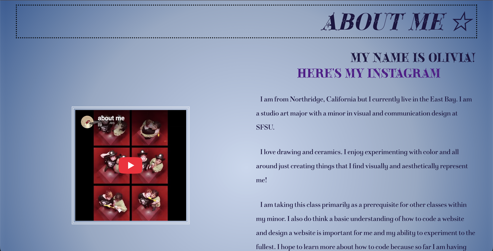

10/20 1:40pm I have been trying to edit the about me page so that when the browser shrinks in size the spacing between the text, navigation, and the video stay relatively the same size and I have not been able to figure it out yet. I tried adjusting each individual ratio of the child containers and the parent container so the nav would take up 20%, the video 30%, and the text 50% but it doesn't seem to make a difference. I also thought about adjusting the position of the navigation bar on this page but I think I may just keep the orientation the same.

10/23 2:01pmCurrently editing the Inspo Page. When I first watched the background lecture I didn't have an idea for how I wanted to incorporate gradients or background images until now. I added a yellow-green and pink radial gradient which I think speaks to the critiques from my peer review. I will further adjust the text hierachy because the current h2 design no longer fits the theme and feels a little removed instead of showing the second most important text on the page.


10/23 3:01pmPROBLEM! So the issue I was having with the video overlapping the text is now happening with the text on my inspiration page. This is really irritating me to my core since it is one of the first major issues I am having that I haven't been able to figure out yet. I have implemented flexbox on this page (Checkpoint Two) and I found that the images connected to these blocks of text go down proportionately since I have them entered as children of the child flexbox. I'm wondering if maybe that is the solution for the inspiration page and the about me page.

10/23 4:30pmEditing the About me Page: I put a radial gradient on this page too and I'm not in love with it. Still not sure what I want to do with it. I think maybe, since a big part of my life is just sitting and drawing, I could incorporate a drawing or some kind of art into the background of the body? I am still deciding between previously drawn or if I want to draw something specifically for the page. Until then it will remain the unsatisfying radial gradient.
